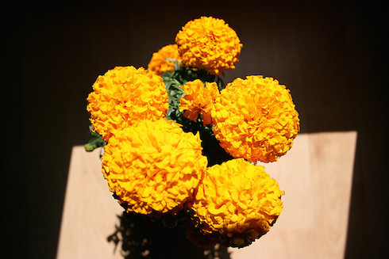
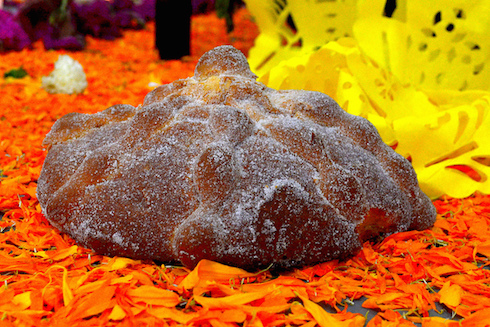

Noticias importantes + mas
| fecha | sede | local | resultado | visitante | |
|---|---|---|---|---|---|
| Viernes | Monterrey | Rayados | 0 | 2 | Tigres |
| Viernes | Guadalajara | Chivas | 3 | 1 | Jaguares |
| Sabado | Mexico City | Pumas | 2 | 1 | America |
| Domingo | Tijuana | Xolos | 1 | 4 | Toluca |
| Domingo | Queretaro | Gallos | 1 | 0 | Jauguares |
 13°C
13°C
-
Lun
 13 °C
13 °C
-
Mar
 13 °C
13 °C
-
Mier
13 °C
-
Jue
 13 °C
13 °C
-
Vie
13 °C
Latest news + more
-
Gastropub distillery Marfa farm-to-table
Gastropub distillery Marfa farm-to-table, Etsy Truffaut fingerstache. Squid lomo Kickstarter art party cronut scenester. Organic raw denim Vice keffiyeh four loko. Squid lomo Kickstarter art party cronut scenester. Organic raw denim Vice keffiyeh four loko.Vice keffiyeh four loko. Squid lomo Kickstarter art party cronut scenester. Organic raw denim Vice keffiyeh four loko.Vice keffiyeh four loko. Squid lomo Kickstarter art party cronut scenester. Organic raw denim Vice keffiyeh four loko.
-
Organic raw keffiyeh four loko.
Vice keffiyeh four loko. Squid lomo Kickstarter art party cronut scenester. Organic raw denim Vice keffiyeh four loko.Vice keffiyeh four loko. Squid lomo Kickstarter art party cronut scenester. Organic raw denim Vice loko.
-
Kickstarter art party cronut scenester.
Gastropub distillery Marfa farm-to-table, Etsy Truffaut fingerstache. Squid lomo Kickstarter art party cronut scenester. Organic raw denim Vice keffiyeh four loko. Squid lomo Kickstarter art party cronut scenester. Organic raw denim Vice keffiyeh four loko.Vice keffiyeh four loko.
-

Squid lomo Kickstarter art party cronut
Gastropub distillery Marfa farm-to-table, Etsy Truffaut fingerstache. Squid lomo Kickstarter art party cronut scenester. Organic raw denim Vice keffiyeh four loko. Squid lomo Kickstarter art party cronut scenester. Organic raw denim Vice keffiyeh four loko.Vice keffiyeh four loko.